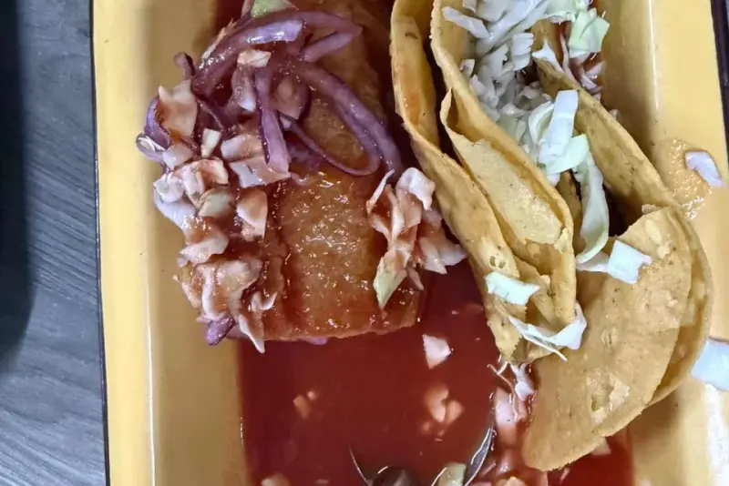

Guadalajara Foodie Tour — Street Food, Markets & the Real Local Flavor
Top-Rated Street Food · Legendary Local Spots · Authentic Jalisco Cuisine · No Tourist Traps
The best food tour in Guadalajara — eat birria, tortas ahogadas and tejuino at the same spots tapatíos have lined up at for decades.

Your Foodie Adventure
5 hours (street food crawl through authentic local spots)
10:00 AM — Hotel pickup in Guadalajara
We collect you from your hotel or agreed location.
10:30 AM — Stop 1: Legendary birria spot (locals only)
Authentic slow-cooked meat stew where you'll eat with tapatíos.
11:15 AM — Stop 2: Torta ahogada — Guadalajara's iconic drowned sandwich
Pork sandwich drowned in spicy tomato sauce — a local institution.
12:00 PM — Stop 3: Street market · tejuino, corn, antojitos
Fermented corn drinks, fresh corn and traditional Mexican appetizers.
1:00 PM — Stop 4: Dessert stop · local sweets and agua fresca
Traditional Jalisco sweets and refreshing traditional drinks.
2:00 PM — Optional: mercado visit for context and local color
Explore the local market to understand food culture.
3:00 PM — Drop-off at your hotel
We drop you off satisfied and full of authentic Tapatio flavors.
Frequently Asked Questions
-
Option 1 — Full payment via Clip (MXN):
Pay 100% via secure Clip link before your tour.
Due: 24 hours before tour date.
Price example (4 people at $50 USD/person): $3,600 MXN total via Clip. -
Option 2 — Higlobe deposit + Cash balance
(USD):
30% deposit via Higlobe bank transfer to Cross River Bank, 885 Teaneck Road, Teaneck NJ 07666 (USD).
Remaining 70% in USD cash on tour day.
Due: Higlobe deposit 72 hours before tour / Cash at tour start.
Example (4 people): $60 USD deposit via Higlobe + $140 USD cash on the day. -
Option 3 — Full cash payment (USD):
100% in USD cash, paid at the start of the tour.
Due: Tour start day.
Note: Reservation is held pending deposit confirmation. Cash-only bookings are subject to availability.
Payment Methods
We accept flexible payment options for your convenience. A 30% non-refundable deposit is required to secure your reservation.
Clip Payment Link
Pay in Mexican Pesos (MXN) instantly via Clip.
✓ Instant confirmation
✓ Secure payment
Cash USD
Pay the full amount or deposit in US dollars cash on the tour day.
When: Hotel pickup or start of tour
What we accept: USD cash bills
Note: 30% deposit required in advance
Higlobe Bank Transfer
Send funds directly from your US bank account.
Bank:
Cross River Bank (via Higlobe)
Routing Number:
021214891
Account Number:
344990447544
Account Holder:
Octavio Jacob Orozco
Gonzalez
Address:
885 Teaneck Road, Teaneck
NJ 07666
No fees for the client
Include your tour date in memo. Allow 2-3 business days for processing.
⚠️ Important Payment & Cancellation Policy:
- Option 1 — Clip (MXN): Pay 100% via secure Clip link. Due 24 hours before tour date.
- Option 2 — Higlobe + Cash (USD): 30% deposit via Higlobe to Cross River Bank, 885 Teaneck Road, Teaneck NJ 07666, due 72 hours before tour (Higlobe takes 2-3 business days to clear). Remaining 70% in USD cash at tour start.
- Option 3 — Full Cash (USD): 100% in USD cash, paid at tour start. Subject to availability — no deposit holds the date.
- No-Show Policy: Cancellation within 24 hours of tour start = loss of full deposit. Cancellations with 48+ hours notice receive a credit equal to the deposit paid, applicable to future tours.
- Important: No booking is confirmed by verbal agreement only. Your spot is secured only upon deposit confirmation.
Ready for Authentic Tapatio Street Food?
Eat where locals eat. No tourist traps.
Book Now via WhatsAppGuaranteed response in less than 15 minutes